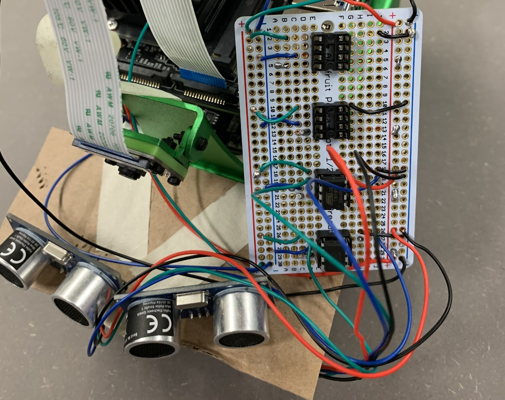
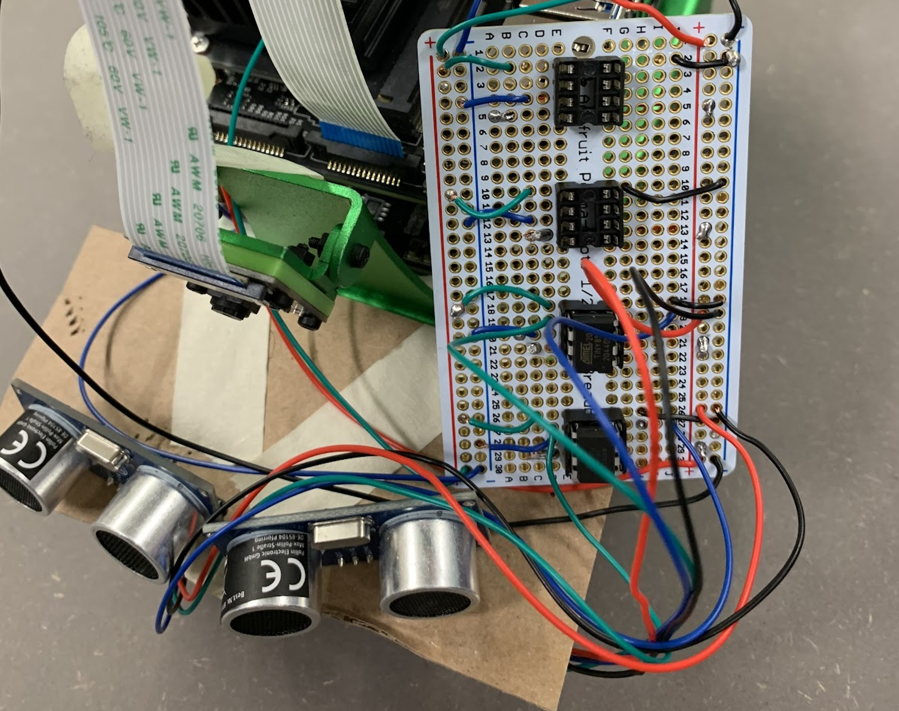

Robotics & Microcontroller
The Development of a Self-driving, object-avoiding robot with Nvidia Jetson and ultrasonic sensors. This project was about developing a self-driving robot that can explore its environment and avoid obstacles using ultrasonic sensors and a camera controlled by an Nvidia Jetson board. To achieve this goal, we used ultrasonic sensors and multiple Attiny microcontrollers to detect obstacles and communicate with the Jetson board via the I2C bus. The Jetson board processed the sensor data and used it to control the robot's movement and steering.
 
